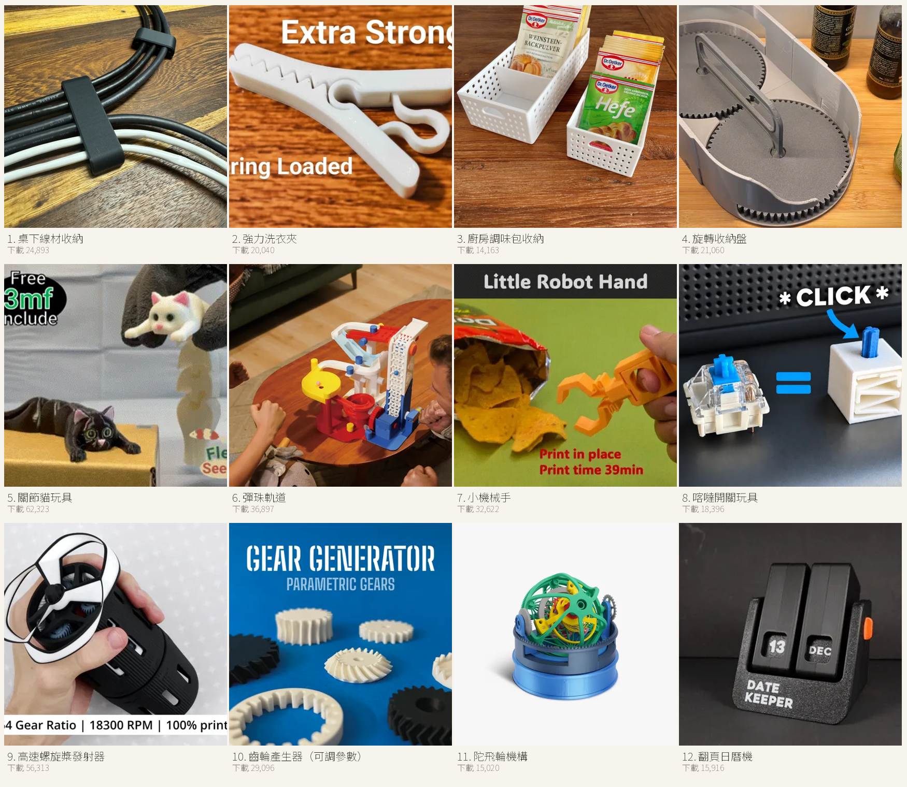
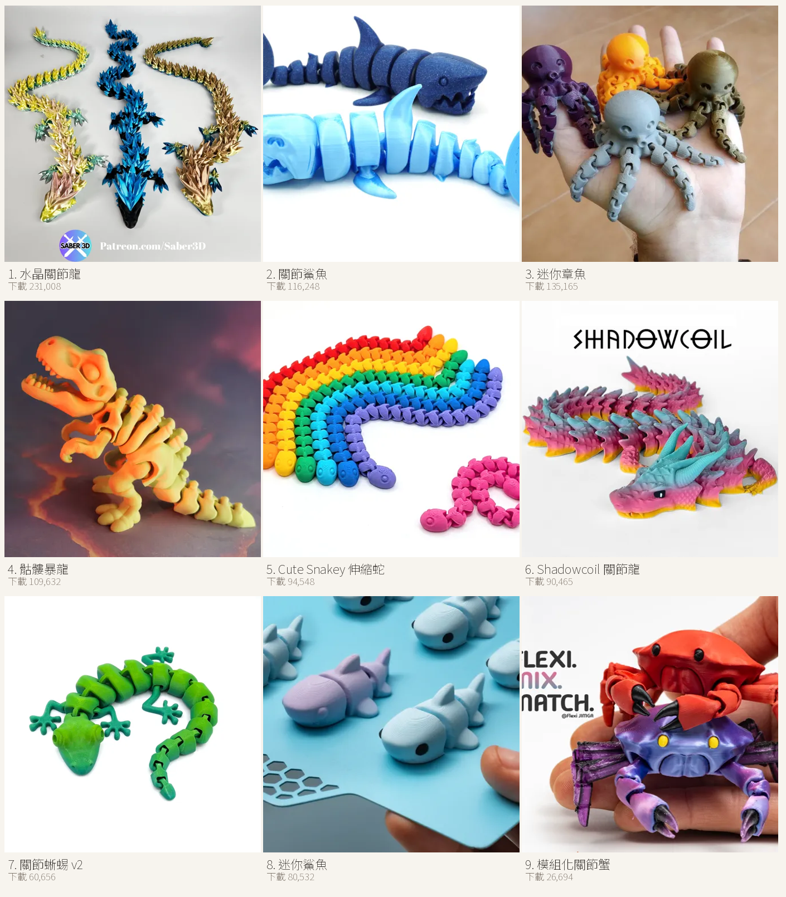

3D 列印模型總整理：實用・玩具・機械・關節動物
剛買 Bambu Lab A1，第一件事不是找最酷的模型，而是找「印壞了也不心痛、印好了天天用」的那幾件。這篇把四大類整理在一起，每一件都附 MakerWorld 的實際下載次數與原始連結。
整理日期 2026-11-08｜下載數為 MakerWorld API 當日實測值
一、先講怎麼挑，不要一開始就挑最難的
新手最常犯的錯，是拿一個 12 小時、需要支撐、還要組裝的模型當第一件。失敗一次就會覺得「這台機器不好用」。
| 階段 | 挑什麼 | 原因 |
|---|---|---|
| 第 1–3 件 | 30 分鐘內、免支撐、平底 | 先確認機器沒問題，建立信心 |
| 第 4–10 件 | 實用件（收納、掛勾、夾具） | 失敗成本低，家裡真的用得到 |
| 之後 | 一體成形關節、機構件 | 需要尺寸準度與冷卻都穩定 |
一律先印機器內建的預切片模型。那是原廠參數的基準線，跑得漂亮才代表機器正常；跑不好先查環境（風、地板水平、線材受潮），不要急著改參數。
二、實用：解決生活麻煩的九件
這一批的共同點是「買不到剛好合的尺寸」，所以只能印。

- 夾鏈袋／麵包袋夾154,861 次下載Mini Bag Clip
- 線材整線器56,264 次下載Ergonomic Cable Winder
- 鑽孔集塵罩55,504 次下載Drill Dust Collector
- 零件分類盤55,024 次下載Parametric Sorting Tray
- 門擋43,035 次下載Door Stopper
- 垃圾袋夾38,388 次下載Bag Closure Clips
- 鍋蓋架33,911 次下載Ikea 365+ Plastic Lid Hanger / Organizer
- 海綿／皂盤23,682 次下載Japandi Drain Tray – Sponge & Soap Holder
- 瓶罐晾乾架63,936 次下載Stackable Bottle Drying Rack
三、再補四件日常小麻煩
下載數都在一萬五以上，代表不是小眾需求。

- 牙膏擠壓器90,158 次下載Ratcheted Toothpaste Tube Squeezer
- USB 線收納盒46,550 次下載USB cable organizer Box tray IPhone Samsung
- 綿羊造型廁紙架19,343 次下載Sheeptastic! Toilet Paper Sheep Holder - FITS ALL!
- GT3 RS 鑰匙掛架16,585 次下載GT3 rs key hanger
四、玩的：印完就能玩的四件
關節類與減壓類，適合當「給小孩看」的第一件。

- 水晶關節龍230,999 次下載Articulated Crystal Dragon by Saber3D
- 指尖方塊198,504 次下載Fidget Cube Toy: Angled
- 迷宮解謎盒29,532 次下載Russian Maze Puzzle Gift Box - HARD
- HelixCore 旋轉陀螺66,398 次下載HelixCore – Press-to-Spin Squishy Ball
五、機械：會動的機構件
這類最能看出機器精度：齒輪咬合、軸承間隙、一體成形連桿。

- 行星齒輪指尖陀螺171,587 次下載Planetary Gears Finger Fidget Spinners
- 3D 可印噴射引擎43,707 次下載3D Printable Jet Engine
- 一體成形 V8 引擎38,673 次下載Print-in-place v8 engine fidget
- 608Z 滾柱軸承51,995 次下載608Z, 6000Z, 6001Z Roller Bearing V2
- 機械手臂手機架43,963 次下載Mechanical Phone Holder Desk Mounted Stand Arm
六、第二批 12 件：收納、玩具、機構
如果你已經印完前面幾類，這批可以往「家裡每個角落」擴散。

- 桌下線材收納24,893 次下載Clean Cable Management Organizer Clip
- 強力洗衣夾20,040 次下載The Ultimate 3D Printed Clip
- 廚房調味包收納14,163 次下載Kitchen Packet Organizer / Baking Spice Box
- 旋轉收納盤21,060 次下載Spinning Organizer | Rotating Storage Box
- 關節貓玩具62,323 次下載Flexi Holding Cat (Print-in-place)
- 彈珠軌道36,897 次下載Marble Run 003
- 小機械手32,622 次下載Little Robot Hand
- 喀噠開關玩具18,396 次下載Clicky Clicker with *Click* Sound
- 高速螺旋槳發射器56,313 次下載High Speed Propeller Launcher
- 齒輪產生器（可調參數）29,096 次下載Gear Generator - Parametric Gears & Racks
- 陀飛輪機構15,020 次下載TT Furious Tourbillon
- 翻頁日曆機15,916 次下載"Date Keeper" Perpetual Flip Calendar
七、一體成形關節動物
全部都是 print-in-place：印完不用組裝，直接能擺動。這類同時考驗尺寸補償與冷卻。

- 水晶關節龍231,008 次下載Articulated Crystal Dragon by Saber3D
- 關節鯊魚116,248 次下載Articulated Shark
- 迷你章魚135,165 次下載Cute Mini Octopus
- 骷髏暴龍109,632 次下載Flexi Skeleton T-Rex Dinosaur
- Cute Snakey 伸縮蛇94,548 次下載Cute Snakey - Free to Sell - No AMS
- Shadowcoil 關節龍90,465 次下載Shadowcoil - Articulated Dragon
- 關節蜥蜴 v260,656 次下載Articulated Lizard v2
- 迷你鯊魚80,532 次下載Mini Shark Articulated
- 模組化關節蟹26,694 次下載Modular Flexi Crab No AMS Required
八、A1 的列印參數（這幾類都適用）
| 項目 | 建議 |
|---|---|
| 噴嘴／層高 | 0.4mm／0.2mm（關節類用 0.16mm 更滑順） |
| 填充 | 15%（機構件 25%，齒輪類 40%） |
| 支撐 | 只有懸空超過 45° 才開；關節動物一律不開 |
| 列印板 | 原廠 PEI 紋理板，不用膠水 |
| 孔徑補償 | 要穿軸的孔，孔徑放大 0.2–0.3mm |
| 環境 | 不要放冷氣出風口或窗邊，A1 無封箱，風一吹就翹邊 |
九、最常見的三種失敗，與對應修法
| 症狀 | 原因 | 修法 |
|---|---|---|
| 第一層有空隙、邊緣翹起 | 床面有油、Z 偏移太低 | 酒精擦板、重跑自動床平 |
| 關節黏死、掰不開 | 間隙不足或流量過高 | 層高降到 0.16mm、流量 −2% |
| 側面拉絲嚴重 | 線材受潮、溫度過高 | 換乾燥線材、降 5–10°C |
十、資料來源與授權
所有模型都來自 MakerWorld，下載數以 MakerWorld 公開 API 於 2026-11-08 取得。各模型授權不同（多為 CC BY-NC 或 MakerWorld 專屬授權），下載前請在該頁確認授權條款；本文只整理連結，不轉載模型檔案。